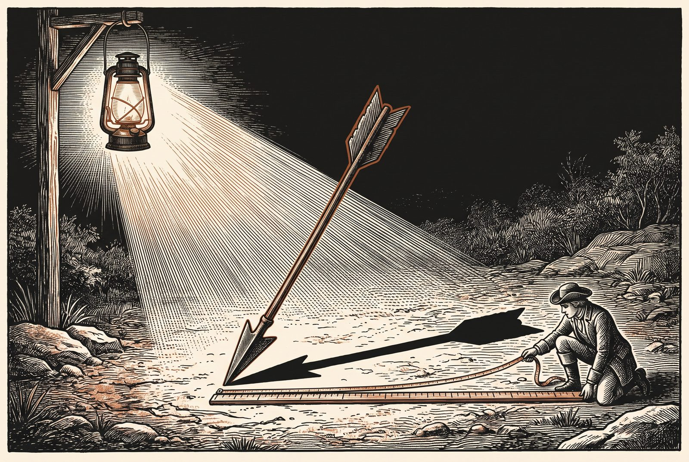

// Utilidades comunes de las simulaciones de la sección 1.1.
s11h = {
const NS = "http://www.w3.org/2000/svg";
const el = (tag, attrs = {}, padre = null) => {
const e = document.createElementNS(NS, tag);
for (const [k, v] of Object.entries(attrs)) e.setAttribute(k, v);
if (padre) padre.append(e);
return e;
};
const texto = (padre, x, y, contenido, attrs = {}) => {
const t = el("text", {x, y, "font-size": 12, fill: "var(--sim-tinta)", ...attrs}, padre);
t.textContent = contenido;
return t;
};
const deslizador = (rotulo, min, max, paso, valor, alCambiar, fmt = v => String(v)) => {
const e = html`<label class="sim-control"><span>${rotulo}</span><input type="range" min=${min} max=${max} step=${paso} value=${valor}><output></output></label>`;
const i = e.querySelector("input"), o = e.querySelector("output");
const pintar = () => { o.value = fmt(+i.value); };
i.oninput = () => { pintar(); alCambiar(); };
pintar();
return {e, get: () => +i.value, set: v => { i.value = v; pintar(); }};
};
const boton = (rotulo, f) => {
const b = html`<button type="button">${rotulo}</button>`;
b.onclick = f;
return b;
};
const fila = (rotulo, botones) => {
const d = html`<div class="sim-mem-botones"><span class="sim-mem-rot">${rotulo}</span></div>`;
d.append(...botones);
return d;
};
const punto = (svg, ev) => {
const p = svg.createSVGPoint();
p.x = ev.clientX; p.y = ev.clientY;
return p.matrixTransform(svg.getScreenCTM().inverse());
};
// Hace arrastrable un elemento del SVG; alMover recibe el punto en coordenadas del SVG.
const arrastrar = (svg, asa, alMover) => {
asa.style.cursor = "grab";
asa.addEventListener("pointerdown", ev => {
ev.preventDefault();
asa.setPointerCapture(ev.pointerId);
const mover = e => alMover(punto(svg, e));
const soltar = () => {
asa.removeEventListener("pointermove", mover);
asa.removeEventListener("pointerup", soltar);
asa.removeEventListener("pointercancel", soltar);
};
asa.addEventListener("pointermove", mover);
asa.addEventListener("pointerup", soltar);
asa.addEventListener("pointercancel", soltar);
});
};
// Puntas de flecha en los tres colores del tema, con identificadores propios de cada lienzo.
const puntas = (svg, prefijo) => {
const defs = el("defs", {}, svg);
for (const [n, c] of [["tinta", "var(--sim-tinta)"], ["acento", "var(--sim-acento)"], ["suave", "var(--sim-suave)"]]) {
const m = el("marker", {id: `${prefijo}-${n}`, viewBox: "0 0 10 10", refX: 9, refY: 5,
markerWidth: 7, markerHeight: 7, orient: "auto-start-reverse"}, defs);
el("path", {d: "M0,0 L10,5 L0,10 z", fill: c}, m);
}
};
// Cuadrícula de un plano con origen en (cx, cy), esc píxeles por unidad y rango unidades por lado.
const plano = (svg, esc, cx, cy, rango) => {
const g = el("g", {}, svg);
for (let k = -rango; k <= rango; k++) {
const w = k === 0 ? 1.3 : 0.6, c = k === 0 ? "var(--sim-suave)" : "var(--sim-regla)";
el("line", {x1: cx + k * esc, y1: cy - rango * esc, x2: cx + k * esc, y2: cy + rango * esc, stroke: c, "stroke-width": w}, g);
el("line", {x1: cx - rango * esc, y1: cy + k * esc, x2: cx + rango * esc, y2: cy + k * esc, stroke: c, "stroke-width": w}, g);
}
return g;
};
const f2 = v => (Math.abs(v) < 0.005 ? 0 : v).toFixed(2);
// Generador pseudoaleatorio con semilla (mulberry32) y normal estándar por Box–Muller.
const azar = semilla => {
let a = semilla >>> 0;
const u = () => {
a = (a + 0x6D2B79F5) >>> 0;
let t = a;
t = Math.imul(t ^ (t >>> 15), t | 1);
t ^= t + Math.imul(t ^ (t >>> 7), t | 61);
return ((t ^ (t >>> 14)) >>> 0) / 4294967296;
};
const normal = () => Math.sqrt(-2 * Math.log(1 - u())) * Math.cos(2 * Math.PI * u());
return {u, normal};
};
return {el, texto, deslizador, boton, fila, punto, arrastrar, puntas, plano, f2, azar};
}1.3 Proyecciones y matrices
Publicada el 14 de octubre de 2026
Un vector proyecta una sombra sobre cualquier recta, y esa sombra es un número que se puede leer o borrar. Esta sección empieza por ahí: proyectar un vector sobre una dirección para leer una propiedad de una representación, o para eliminarla, y agrupar vectores parecidos con el algoritmo k-means. Después da el paso decisivo del álgebra lineal: las matrices como funciones que transforman vectores, y su producto como la composición de esas funciones, que es lo que hace cada capa de una red neuronal. Al terminar, el lector sabrá proyectar y borrar direcciones, agrupar embeddings, leer un producto de matrices de cuatro maneras y contar cuánto cuesta calcularlo.
1.3.1 Proyecciones: la sombra de un vector
En 2016, un grupo de investigadores de la Universidad de Boston y de Microsoft Research hizo una pregunta a unos embeddings de palabras muy usados, aprendidos de millones de noticias: «hombre es a programador como mujer es a…». La respuesta de la geometría fue «ama de casa», y el artículo en que lo contaron llevaba esa analogía en el título (Bolukbasi et al. 2016). Los embeddings habían aprendido de los textos no solo el significado de las palabras, sino también sus estereotipos. La pregunta inmediata es si se puede leer ese sesgo en un embedding, y si se puede borrar. Las dos cosas se hacen con la misma herramienta geométrica, la sombra de un vector, y esta sub-sección la construye.
El producto punto de x con un vector unitario u tiene una lectura que todavía no se ha usado: es la coordenada de x a lo largo de la dirección u, la longitud (con signo) de la sombra que x proyecta sobre la recta de u. Quedarse con esa sombra es proyectar; quitársela a x es borrar la dirección u. Las dos operaciones se usan para leer información de una representación y para eliminarla.

Definición 1 (Proyección sobre una recta) Dos vectores x, y son ortogonales si x \cdot y = 0. Sea u \in \mathbb{R}^d no nulo. La proyección ortogonal de x sobre la recta generada por u es \operatorname{proy}_u(x) = \frac{x \cdot u}{u \cdot u}\, u , y la componente ortogonal de x respecto de u es x - \operatorname{proy}_u(x). Si \|u\| = 1, la proyección se reduce a (x \cdot u)\, u, y el número x \cdot u es la coordenada de x a lo largo de u.
Qué dice. La proyección es un múltiplo de u: el número \frac{x \cdot u}{u \cdot u} dice cuántas veces u hay que tomar para llegar a la sombra de x, y es negativo si x apunta hacia el lado contrario. La componente ortogonal es lo que sobra: lo que habría que añadir a la sombra para volver a x. El denominador u \cdot u hace que el resultado no dependa de la longitud de u, solo de su recta.
Ejemplo. Con x = (3, 1) y u = (1, 1): x \cdot u = 4 y u \cdot u = 2, así que \operatorname{proy}_u(x) = 2u = (2, 2) y la componente ortogonal es (3, 1) - (2, 2) = (1, -1). Con u unitario, \hat u = (1, 1)/\sqrt{2}, la coordenada de x es x \cdot \hat u = 4/\sqrt{2} \approx 2.83, la longitud de la sombra (2, 2).
La definición no es arbitraria: la proyección es el punto de la recta más cercano a x, y es el único con esa propiedad.
Proposición 1 (Mejor aproximación y Pitágoras) Sea u \neq 0, p = \operatorname{proy}_u(x) y r = x - p. Entonces:
- r es ortogonal a u;
- para todo t \in \mathbb{R}, \ \|x - t u\| \ge \|x - p\|, con igualdad solo si t u = p;
- \|x\|^2 = \|p\|^2 + \|r\|^2.
Qué dice. Tres cosas que se ven en el dibujo de una sombra. Lo que sobra es perpendicular a la recta. La sombra es, de todos los puntos de la recta, el más cercano a x: cualquier otro punto tu queda más lejos. Y las longitudes cumplen el teorema de Pitágoras, con x como hipotenusa.
Ejemplo. Con x = (3, 1), u = (1, 1), p = (2, 2) y r = (1, -1): r \cdot u = 1 - 1 = 0; y \|x\|^2 = 10 = 8 + 2 = \|p\|^2 + \|r\|^2. Otro punto de la recta, como 3u = (3, 3), está a distancia \|(0, -2)\| = 2 de x, mayor que \|r\| = \sqrt{2}.
Demostración. La estrategia es la misma de Cauchy–Schwarz en 1.1 Vectores y producto punto: la distancia de x a los puntos tu de la recta es una parábola en t, y su mínimo da la sombra.
Paso 1: la parábola y su mínimo (punto 2). \varphi(t) = \|x - t u\|^2 = \|x\|^2 - 2t\, x \cdot u + t^2 \|u\|^2 es una parábola con coeficiente principal \|u\|^2 > 0. Su único mínimo está donde se anula su derivada, -2\, x \cdot u + 2t\|u\|^2 = 0, es decir, en t^* = x \cdot u / \|u\|^2, y t^* u = p. Cualquier otro t da un valor estrictamente mayor.
Paso 2: lo que sobra es perpendicular (punto 1). r \cdot u = (x - t^* u) \cdot u = x \cdot u - t^* \|u\|^2 = 0, por el valor de t^*.
Paso 3: Pitágoras (punto 3). \|x\|^2 = \|p + r\|^2 = \|p\|^2 + 2\, p \cdot r + \|r\|^2, y el término cruzado es p \cdot r = t^*\,(u \cdot r) = 0 por el paso 2.
La proyección es una aplicación lineal de x, y por tanto tiene una matriz. Para escribirla conviene un producto que se usará mucho en el libro: el producto exterior de dos vectores a \in \mathbb{R}^m y b \in \mathbb{R}^n es la matriz a b^\top \in \mathbb{R}^{m \times n} de entradas (a b^\top)_{ij} = a_i b_j. A diferencia del producto punto, que convierte dos vectores en un número, el producto exterior los convierte en una tabla con todos sus productos cruzados.
Proposición 2 (La matriz de la proyección) Sea u \neq 0 y P = \dfrac{u u^\top}{u^\top u}. Entonces P x = \operatorname{proy}_u(x) para todo x, P^2 = P y P^\top = P. La matriz I - P, donde I es la identidad, da la componente ortogonal, y cumple también (I - P)^2 = I - P y (I - P)^\top = I - P.
Qué dice. Proyectar sobre la recta de u es multiplicar por una matriz concreta, que se fabrica con el producto exterior de u consigo mismo. Esa matriz es simétrica y, aplicada dos veces, da lo mismo que una vez. Lo mismo vale para I - P, la matriz de «borrar la dirección».
Ejemplo. Con u = (1, 1), u u^\top = \begin{pmatrix} 1 & 1 \\ 1 & 1 \end{pmatrix} y u^\top u = 2, así que P = \begin{pmatrix} 0.5 & 0.5 \\ 0.5 & 0.5 \end{pmatrix} y P\,(3, 1) = (2, 2), la sombra de antes. Y P^2: cada entrada es 0.5 \cdot 0.5 + 0.5 \cdot 0.5 = 0.5, de modo que P^2 = P.
Demostración. Paso 1: P proyecta. Por la asociatividad del producto de matrices, P x = u\, (u^\top x) / (u^\top u), y u^\top x = x \cdot u es un número: Px = \dfrac{x \cdot u}{u \cdot u}\, u = \operatorname{proy}_u(x).
Paso 2: P^2 = P. P^2 = \dfrac{u\, (u^\top u)\, u^\top}{(u^\top u)^2}, y el número u^\top u del centro se simplifica con uno de los del denominador: queda P.
Paso 3: simetría. (u u^\top)^\top = (u^\top)^\top u^\top = u u^\top, así que P^\top = P.
Paso 4: I - P. (I - P)^2 = I - 2P + P^2 = I - 2P + P = I - P, y (I - P)^\top = I - P^\top = I - P.
La igualdad P^2 = P dice algo evidente en el dibujo: proyectar dos veces es lo mismo que proyectar una, porque la sombra de una sombra es ella misma. Las matrices con esta propiedad se llaman idempotentes. La proyección sobre subespacios de dimensión mayor que 1, que necesita bases de vectores ortogonales entre sí, se estudia en 1.5 Descomposiciones y bajo rangomás adelante en este capítulo.
Simulación 1.3.1
Qué representa cada mando. El vector x (en color) y el vector u (en negro) se mueven arrastrando sus puntas. La línea fina es la recta generada por u; sobre ella se dibuja la proyección \operatorname{proy}_u(x) y, de trazos, la componente ortogonal r = x - \operatorname{proy}_u(x), con la marca del ángulo recto. La casilla borrar la dirección u deja solo la componente ortogonal, dibujada desde el origen: es lo que queda de x cuando se le quita su parte a lo largo de u. La lectura comprueba el teorema de Pitágoras de la Proposición 1.
Antes de tocar. Si alarga u al doble sin cambiar su dirección, ¿qué le pasa a la proyección de x?
- Se alarga al doble.
- Se acorta a la mitad.
- No cambia.
- Cambia de dirección.
Lo que pasa. No cambia: \operatorname{proy}_{2u}(x) = \frac{x \cdot 2u}{4\, u \cdot u}\, 2u = \operatorname{proy}_u(x). La sombra depende de la recta de u, no de su longitud; por eso la definición divide por u \cdot u.
La sombra de x sobre la recta de u (franja de color) y lo que sobra (trazos). La proyección no cambia si se alarga o se acorta u: solo depende de su recta.
Mueva u sin cambiar su dirección, alargándolo o acortándolo: la proyección no cambia, porque solo depende de la recta. Con x paralelo a u, la componente ortogonal desaparece y x es su propia sombra; con x perpendicular a u, la sombra se reduce al origen y la coordenada vale 0. Con Ángulo obtuso, la coordenada es negativa: la sombra cae del otro lado del origen. En todos los casos, las dos últimas cifras de la lectura coinciden.
Leer una propiedad. Supongamos que una propiedad de las palabras, por ejemplo su grado de formalidad, está codificada en los embeddings a lo largo de una dirección unitaria u: las palabras más formales tienen una coordenada x \cdot u mayor. Entonces, leer la propiedad de cualquier palabra cuesta un solo producto punto. Buscar direcciones así en las representaciones internas de un modelo es una técnica habitual para averiguar qué ha aprendido, la de las sondas lineales, que se estudia en 33.1 Interpretabilidad mecanísticamás adelante en el libro.
Borrar una propiedad. Vuelta al sesgo de 2016. Bolukbasi y sus colaboradores comprobaron que, en aquellos embeddings, los nombres de profesiones quedaban más cerca de «él» o de «ella» según el estereotipo, y «programador», por ejemplo, más cerca de «él». Su propuesta para corregirlo fue geométrica. Primero, estimar una dirección de género g a partir de diferencias como \text{él} - \text{ella} y \text{hombre} - \text{mujer}. Después, a cada palabra que no debería tener género, como «programador» o «enfermera», quitarle su componente a lo largo de g, es decir, sustituir x por (I - P)x con P = g g^\top / (g^\top g), y volver a normalizar. Tras la corrección, el coseno de esas palabras con g es exactamente 0. Pero el remedio resultó ser más superficial de lo que parecía. Gonen y Goldberg mostraron en 2019 que, después de borrar la dirección, las palabras que antes estaban sesgadas seguían agrupándose entre sí, y que un clasificador sencillo (un modelo que aprende a separar las palabras en dos grupos a partir de sus embeddings) recuperaba su sesgo original con gran precisión (Gonen y Goldberg 2019). El título de su artículo lo resumía con una imagen: pintalabios a un cerdo. La lección geométrica es general: proyectar borra la información contenida en una dirección, pero no la que está repartida en la posición relativa de las palabras. La práctica de esta sección repite su prueba, en español y en inglés.
La simulación siguiente repite el experimento con los embeddings en español de la práctica, y permite usar como brújula cualquier par de palabras.
Simulación 1.3.2
Qué representa cada mando. El selector de polos elige dos palabras a y b; la brújula es la dirección unitaria u = (a - b)/\|a - b\| de sus embeddings normalizados. Cada palabra de la lista elegida se coloca en la recta según su coordenada x \cdot u a lo largo de la brújula (Definición 1): hacia la derecha, más cerca del polo a; hacia la izquierda, del polo b. Debajo, la palabra que elija en Vecinas de muestra sus ocho vecinas por coseno antes y después de borrar la dirección u de todos los embeddings, x \mapsto (I - uu^\top)\,x.
Antes de tocar. Con la brújula «grande–pequeño», ¿de qué lado cree que caerá «elefante»?
- Del lado de «grande», claramente.
- Del lado de «pequeño».
- Justo en el centro.
- No aparece en la lista.
Lo que pasa. Del lado de «pequeño». Una brújula definida con un solo par de palabras recoge todo lo que distingue a esas dos palabras en los textos, no solo el tamaño: «pequeño» y «grande» se usan en frases muy distintas, y ninguna habla de elefantes. Por eso las direcciones serias se estiman con muchos pares, como hace la práctica de esta sección.
La coordenada de cada palabra es su producto punto con la brújula unitaria u. Las vecinas después de borrar u se calculan con la fórmula exacta del Ejercicio 5.
Con Profesiones y género, la brújula «hombre–mujer» deja del lado de «mujer» a «secretaria», «actriz» y «enfermera», y del lado de «hombre», con las coordenadas más altas, a «soldado», «escritor» y «programador». En español hay que leer este resultado con cuidado, porque mezcla dos cosas: los estereotipos de los textos y la gramática. «Actriz», «enfermera» y «secretaria» son formas femeninas, y el embedding de una palabra recoge también su género gramatical. Al borrar la dirección, las vecinas de «enfermera» cambian poco: salen «abuela» e «hija» y entran «paciente» y «joven», pero «médico», «madre» y «esposa» siguen ahí. Es la observación de Gonen y Goldberg con datos del laboratorio. Pruebe después Animales y tamaño: la brújula «grande–pequeño» coloca al elefante del lado de «pequeño». Una dirección definida por un solo par de palabras puede no significar nada, y por eso Bolukbasi y sus colaboradores la estimaban con muchos pares.
El centroide, de nuevo. El mismo argumento de Pitágoras justifica lo que se anunció en 1.1 Vectores y producto punto sobre el centroide.
Proposición 3 (El centroide minimiza la suma de cuadrados) Sean x_1, \dots, x_n \in \mathbb{R}^d con centroide m. Para todo c \in \mathbb{R}^d, \sum_{i=1}^{n} \|x_i - c\|^2 = \sum_{i=1}^{n} \|x_i - m\|^2 + n\, \|m - c\|^2 , y por tanto m es el único punto que minimiza la suma de los cuadrados de las distancias a los x_i.
Qué dice. Si se mide la «distancia total» de un punto c a todos los x_i sumando los cuadrados de las distancias, el centroide gana a todos: la suma desde cualquier otro punto es la del centroide más una penalización, n\|m - c\|^2, que crece con lo lejos que esté c del centroide.
Ejemplo. Con los puntos 0, 1, 2 de la recta, el centroide es 1 y la suma de cuadrados desde él vale 1 + 0 + 1 = 2. Desde c = 0 vale 0 + 1 + 4 = 5 = 2 + 3 \cdot 1^2, exactamente lo que dice la fórmula.
Demostración. Paso 1: descomponer. Se escribe x_i - c = (x_i - m) + (m - c) y se desarrolla el cuadrado: \|x_i - c\|^2 = \|x_i - m\|^2 + 2\,(x_i - m)\cdot(m - c) + \|m - c\|^2.
Paso 2: sumar. Al sumar en i, el último término da n\|m - c\|^2, y el término cruzado da 2\,(m - c) \cdot \sum_i (x_i - m).
Paso 3: el cruzado es cero. \sum_i (x_i - m) = \sum_i x_i - nm = nm - nm = 0: las desviaciones respecto de la media suman cero, como se vio en 1.1 Vectores y producto punto.
Como n\|m - c\|^2 > 0 si c \neq m, el centroide es el único mínimo.
Agrupar: el algoritmo k-means. La proposición anterior tiene una consecuencia práctica de las que más se usan en el análisis de datos. Supongamos que se quieren repartir N vectores en k grupos de vectores parecidos, por ejemplo para descubrir qué familias de palabras hay en un vocabulario. El algoritmo más sencillo, el de k-means (k medias), propuesto por Stuart Lloyd en 1957, alterna dos pasos a partir de k centros iniciales c_1, \dots, c_k:
- Asignar: cada punto x_i pasa al grupo g(i) de su centro más cercano (en caso de empate, conserva su grupo anterior).
- Actualizar: cada centro se sustituye por el centroide de los puntos de su grupo.
y se detiene cuando ninguna asignación cambia. Lo que busca es que los puntos estén cerca de sus centros, es decir, que sea pequeño el objetivo J = \sum_{i=1}^{N} \|x_i - c_{g(i)}\|^2 .
Proposición 4 (k-means nunca empeora) Ningún paso de k-means aumenta J, y el algoritmo termina tras un número finito de pasos.
Qué dice. El algoritmo solo puede mejorar o quedarse igual, y no puede dar vueltas eternamente. Lo que no dice es que llegue al mejor reparto posible.
Ejemplo. Con los puntos 0, 1, 2, 10, 11 y dos grupos, empezando con los centros 0 y 1: la primera asignación pone \{0\} en un grupo y \{1, 2, 10, 11\} en otro, con J = 0 + (0 + 1 + 81 + 100) = 182; al actualizar, los centros pasan a 0 y 6, y J = 82; la segunda asignación forma \{0, 1, 2\} y \{10, 11\}, con J = 46; al actualizar, los centros pasan a 1 y 10.5, y J = 2.5. La siguiente asignación no cambia nada, y el algoritmo se detiene: 182 \to 82 \to 46 \to 2.5, siempre hacia abajo.
Demostración. Paso 1: asignar no empeora. Cada término \|x_i - c_{g(i)}\|^2 se sustituye por el menor de los \|x_i - c_j\|^2, que no es mayor que el que había. Si una asignación cambia, es porque el punto encontró un centro estrictamente más cercano (con empate, conserva su grupo), y entonces J baja estrictamente.
Paso 2: actualizar no empeora. Con el reparto fijo, J es la suma, grupo a grupo, de las distancias al cuadrado de sus puntos a su centro. Por la Proposición 3, el centroide del grupo es el punto que hace mínima esa suma: moverlo allí no puede aumentarla.
Paso 3: termina. Tras cada actualización, los centros son los centroides del reparto, así que J depende solo del reparto. Hay una cantidad finita de repartos de N puntos en k grupos. Mientras las asignaciones cambian, J baja estrictamente, de modo que ningún reparto se puede repetir, y el algoritmo tiene que detenerse.
La proposición garantiza que k-means se detiene, no que encuentre el mejor reparto posible: puede quedarse en un reparto que ningún paso mejora pero que otro punto de partida habría superado (el Ejercicio 3 construye uno). Por eso importa elegir bien los centros iniciales; la biblioteca del libro usa la regla k-means++, que los reparte por los datos. Para embeddings conviene una variante, el k-means esférico, que normaliza los vectores, asigna cada uno al centro de mayor coseno y toma como nuevo centro la dirección media del grupo, m / \|m\|. El mismo argumento funciona, con la desigualdad de Cauchy–Schwarz en lugar de la proposición del centroide: para vectores unitarios, \sum_i x_i \cdot c = n\, m \cdot c \le n \|m\|, con igualdad para c = m/\|m\|, de modo que la dirección media maximiza la suma de los cosenos. Los 40 grupos de la Simulación 1.2.5 son el resultado de esta variante, calculado con forja.core.agrupamiento; su ficha está en la Caja de herramientas.
Lo que el lector ya sabe: proyectar un vector sobre una recta y calcular su componente ortogonal; que la proyección es la mejor aproximación desde la recta y cumple el teorema de Pitágoras; escribir su matriz como un producto exterior; usar la proyección para leer o borrar una propiedad codificada a lo largo de una dirección, sabiendo que borrar una dirección no borra toda la información; y agrupar vectores con k-means, sabiendo por qué nunca empeora.
1.3.2 Matrices: funciones que transforman vectores
En 1858, el matemático inglés Arthur Cayley, que se ganaba la vida como abogado, publicó una memoria sobre unas tablas de números que su amigo James Sylvester había bautizado ocho años antes con el nombre de matrices (Cayley 1858). Cayley se interesaba por las sustituciones lineales, cambios de variables como x' = 2x + y, y' = x - y, y quería una manera de componerlas: hacer una sustitución y después otra. Al escribir cada sustitución como una tabla, la composición resultó ser una nueva operación entre tablas, el producto de matrices, con una propiedad desconcertante: el orden importa.
Hasta aquí, los vectores se han comparado entre sí. Un modelo hace algo más: los transforma. Recibe el embedding de una palabra y produce otro vector que resume su papel en la frase, o recibe una imagen y produce un vector de puntuaciones, una por cada clase de objeto. Las transformaciones más sencillas son las lineales, y la herramienta para escribirlas es la matriz. Esta sub-sección recuerda la relación entre ambas, que el lector conoce, y saca de ella las consecuencias que más se usan en IA.
Una matriz es una función. Una aplicación lineal f : \mathbb{R}^n \to \mathbb{R}^m queda determinada por lo que hace con los vectores de la base canónica, porque f(x) = f(\sum_j x_j e_j) = \sum_j x_j f(e_j). Basta, pues, guardar los n vectores f(e_1), \dots, f(e_n).
Definición 2 (Matriz de una aplicación lineal) La matriz de una aplicación lineal f : \mathbb{R}^n \to \mathbb{R}^m es la tabla A \in \mathbb{R}^{m \times n} cuya columna j es f(e_j). Para x \in \mathbb{R}^n se escribe A x = f(x), de modo que (Ax)_i = \sum_{j=1}^{n} a_{ij}\, x_j , \qquad i = 1, \dots, m .
Ejemplo. La aplicación del plano que manda e_1 = (1, 0) a (2, 0) y e_2 = (0, 1) a (1, 1) tiene la matriz A = \begin{pmatrix} 2 & 1 \\ 0 & 1 \end{pmatrix}, con esas imágenes como columnas. Para x = (1, 3): Ax = 1 \cdot (2, 0) + 3 \cdot (1, 1) = (5, 3), y por filas, (2 \cdot 1 + 1 \cdot 3,\ 0 \cdot 1 + 1 \cdot 3) = (5, 3).
La regla para recordar es que la columna j dice adónde va e_j. Y la entrada i de Ax es el producto punto de la fila i de A con x: aplicar una matriz a un vector es calcular m productos punto, uno por fila.
El producto es la composición. Si B \in \mathbb{R}^{k \times n} representa g : \mathbb{R}^n \to \mathbb{R}^k y A \in \mathbb{R}^{m \times k} representa f : \mathbb{R}^k \to \mathbb{R}^m, la composición f \circ g, que aplica primero g y después f, es lineal y tiene su propia matriz. Esa matriz es, por definición, el producto AB \in \mathbb{R}^{m \times n}. La fórmula de sus entradas no es entonces una definición, sino una consecuencia:
Proposición 5 (Entradas del producto) Para A \in \mathbb{R}^{m \times k} y B \in \mathbb{R}^{k \times n}, la matriz AB de la composición cumple (AB)_{ij} = \sum_{l=1}^{k} a_{il}\, b_{lj} . Además, el producto es asociativo, (AB)C = A(BC), y en general no es conmutativo.
Qué dice. La fórmula de siempre para multiplicar matrices, fila por columna, no es un convenio arbitrario: es la que tiene que salir si el producto representa hacer una transformación después de otra. Y como componer funciones es asociativo, el producto también lo es; y como el orden de dos transformaciones importa, el producto no es conmutativo.
Demostración. Paso 1: las entradas. La columna j de AB es f(g(e_j)) = A\, b_{:j}, donde b_{:j} es la columna j de B; su entrada i es \sum_l a_{il} b_{lj} por la Definición 2.
Paso 2: asociatividad. Se hereda de la composición de funciones: (f \circ g) \circ h y f \circ (g \circ h) hacen lo mismo con cada vector, aplicar h, luego g, luego f; y una aplicación lineal tiene una sola matriz.
Paso 3: no conmutatividad. Basta un ejemplo: con A = \begin{pmatrix} 2 & 0 \\ 0 & 1 \end{pmatrix}, \quad B = \begin{pmatrix} 1 & 1 \\ 0 & 1 \end{pmatrix}, \qquad AB = \begin{pmatrix} 2 & 2 \\ 0 & 1 \end{pmatrix} \neq \begin{pmatrix} 2 & 1 \\ 0 & 1 \end{pmatrix} = BA .
En el ejemplo, A estira el eje horizontal y B es una cizalla, que desliza cada punto horizontalmente en proporción a su altura. Estirar y después cizallar no da lo mismo que cizallar y después estirar, y la simulación siguiente permite verlo. El costo de calcular el producto por la fórmula, unas 2mkn operaciones, se dedujo en 0.3 Medir sin engañarse.
Simulación 1.3.3
Qué representa cada mando. En el modo una matriz, los cuatro deslizadores son las entradas a_{11}, a_{12}, a_{21}, a_{22} de una matriz A de 2 \times 2; la rejilla gris es el plano original y la de color, su imagen por A. La letra F, que no tiene simetrías, deja ver si la transformación invierte la orientación. Las flechas son las columnas de A, es decir, Ae_1 y Ae_2, y también se pueden arrastrar. En el modo dos matrices aparecen las entradas de una segunda matriz B y un selector que aplica AB (primero B, después A) o BA. La lectura muestra la matriz aplicada y su determinante, que mide cuánto cambia el área.
Antes de tocar. ¿Qué le hace a la F la matriz \begin{pmatrix} 0 & -1 \\ 1 & 0 \end{pmatrix}? (Ponga a_{11} = 0, a_{12} = -1, a_{21} = 1, a_{22} = 0.)
- La refleja como en un espejo.
- La gira un cuarto de vuelta, en sentido contrario a las agujas del reloj.
- La aplasta contra una recta.
- La agranda al doble.
Lo que pasa. La gira un cuarto de vuelta en sentido contrario a las agujas del reloj: las columnas dicen que e_1 va a (0, 1) y e_2 va a (-1, 0). El determinante vale 1: el área no cambia y la F no se invierte, a diferencia de una reflexión, cuyo determinante es -1.
La rejilla gris y la F gris son el plano antes de transformar; las de color, después. Las columnas de la matriz son las imágenes de e_1 y e_2.
Con Escalar un eje y Cizalla se ven las dos transformaciones del ejemplo por separado. Reflexión da determinante negativo y la F aparece del revés: ninguna combinación de estiramientos y cizallas con determinante positivo puede producir ese efecto. Aplastar a una recta lleva todo el plano a una recta, porque las dos columnas son proporcionales; el determinante es 0 y la transformación no se puede deshacer. Con AB frente a BA, cambie el selector entre AB y BA: la F termina en posiciones distintas, que es la no conmutatividad vista.
Cuatro maneras de leer un producto. La fórmula c_{ij} = \sum_l a_{il} b_{lj} es una suma doble sobre i, j (las posiciones de C) y l (el índice que se suma), y agrupándola de cuatro maneras distintas se obtienen cuatro lecturas del mismo producto (Figura 3). Cada una aparecerá en un lugar distinto del libro.
Proposición 6 (Las cuatro lecturas del producto) Sean A \in \mathbb{R}^{m \times k} y B \in \mathbb{R}^{k \times n}, con filas a_{i:} y columnas a_{:l} (y análogamente para B), y sea C = AB. Entonces:
- entrada a entrada: c_{ij} = a_{i:} \cdot b_{:j}, el producto punto de la fila i de A con la columna j de B;
- por columnas: la columna j de C es A\, b_{:j} = \sum_l b_{lj}\, a_{:l}, una combinación lineal de las columnas de A;
- por filas: la fila i de C es a_{i:} B = \sum_l a_{il}\, b_{l:}, una combinación lineal de las filas de B;
- como suma de productos exteriores: C = \sum_{l=1}^{k} a_{:l}\, b_{l:}, una suma de k matrices, cada una el producto exterior de una columna de A con una fila de B.
Ejemplo. Con A = \begin{pmatrix} 1 & 2 \\ 3 & 4 \end{pmatrix} y B = \begin{pmatrix} 5 & 6 \\ 7 & 8 \end{pmatrix}, C = AB = \begin{pmatrix} 19 & 22 \\ 43 & 50 \end{pmatrix}. Entrada a entrada: c_{11} = (1, 2) \cdot (5, 7) = 19. Por columnas: la primera columna de C es 5 \cdot (1, 3) + 7 \cdot (2, 4) = (19, 43). Por filas: la primera fila es 1 \cdot (5, 6) + 2 \cdot (7, 8) = (19, 22). Como suma de productos exteriores: \begin{pmatrix} 1 \\ 3 \end{pmatrix}(5, 6) + \begin{pmatrix} 2 \\ 4 \end{pmatrix}(7, 8) = \begin{pmatrix} 5 & 6 \\ 15 & 18 \end{pmatrix} + \begin{pmatrix} 14 & 16 \\ 28 & 32 \end{pmatrix}, que suma C.
Demostración. Las cuatro igualdades dicen, entrada a entrada, que c_{ij} = \sum_l a_{il} b_{lj}: en 1 se lee la suma para i, j fijos; en 2, para j fijo y todos los i; en 3, para i fijo y todos los j; en 4, se fija l y se recorren todos los i, j, con lo que cada sumando a_{:l} b_{l:} tiene entradas a_{il} b_{lj}, y se suma en l.
La primera lectura es la que se usa para calcular a mano y para contar operaciones. La segunda y la tercera explican qué hace una capa de una red con un lote de datos, como se verá en 1.4 Tensores, broadcasting y einsum. La cuarta parece la más extraña y es la más profunda: dice que toda matriz de m \times n es una suma de productos exteriores, y que si basta con pocos sumandos la matriz se puede guardar con muchos menos números. Esa idea, el bajo rango, es el tema de 1.5 Descomposiciones y bajo rangomás adelante en este capítulo.
La transpuesta. La transpuesta de A \in \mathbb{R}^{m \times n} es la matriz A^\top \in \mathbb{R}^{n \times m} de entradas (A^\top)_{ij} = a_{ji}: sus filas son las columnas de A. Con ella, el producto punto se escribe x \cdot y = x^\top y, como en 1.1 Vectores y producto punto, y se cumple (AB)^\top = B^\top A^\top, porque la entrada (i, j) de ambos lados es \sum_l a_{jl} b_{li}.
La capa lineal. La pieza más común de una red neuronal es la capa lineal, que transforma un vector x \in \mathbb{R}^{d_{\text{ent}}} en y = W x + b , \qquad W \in \mathbb{R}^{d_{\text{sal}} \times d_{\text{ent}}},\ b \in \mathbb{R}^{d_{\text{sal}}} . La matriz W, los pesos, y el vector b, el sesgo, son parámetros: el entrenamiento los ajusta. (Estrictamente, x \mapsto Wx + b no es lineal sino afín, una aplicación lineal seguida de una traslación; el nombre de «capa lineal» es el habitual.) Cada salida y_i es el producto punto de la fila i de W con x, más b_i: un puntaje de coincidencia de x con un «patrón» aprendido, la fila i. Una capa lineal con d_{\text{ent}} = d_{\text{sal}} = 768 tiene 768^2 + 768 = 590\,592 parámetros.
¿Por qué no encadenar muchas capas lineales para obtener transformaciones más ricas? Porque no sirve de nada: dos capas seguidas, W_2 (W_1 x + b_1) + b_2 = (W_2 W_1)\, x + (W_2 b_1 + b_2) , equivalen a una sola capa, con pesos W_2 W_1 y sesgo W_2 b_1 + b_2. Por la asociatividad, una cadena de cualquier longitud se reduce a una capa. Las redes neuronales intercalan por eso, entre capa y capa, una operación no lineal sencilla, aplicada coordenada a coordenada; sin ella, toda la profundidad de la red sería decorativa. Esas operaciones se estudian en 5.1 Perceptrones multicapa e inicializaciónmás adelante en este tomo.
La matriz de Gram. Si se apilan n vectores x_1, \dots, x_n \in \mathbb{R}^d como filas de una matriz X \in \mathbb{R}^{n \times d}, un solo producto de matrices calcula todos sus productos punto a la vez.
Definición 3 (Matriz de Gram) La matriz de Gram de x_1, \dots, x_n, las filas de X, es G = X X^\top \in \mathbb{R}^{n \times n}, de entradas G_{ij} = x_i \cdot x_j.
Ejemplo. Con el héroe, el villano y la tormenta de 1.1 Vectores y producto punto como filas, la matriz de Gram es G = \begin{pmatrix} 17 & -3 & 9 \\ -3 & 14 & 12 \\ 9 & 12 & 19 \end{pmatrix} : en la diagonal, las normas al cuadrado; fuera, los productos punto de cada pareja.
Proposición 7 (Propiedades de la matriz de Gram) G = XX^\top es simétrica y semidefinida positiva: z^\top G z \ge 0 para todo z \in \mathbb{R}^n.
Qué dice. La tabla de todos los productos punto es simétrica (porque x_i \cdot x_j = x_j \cdot x_i) y nunca da un número negativo cuando se la «pesa» por ambos lados con un vector cualquiera. Esa segunda propiedad es la que limita, por ejemplo, cuántas palabras pueden ser opuestas entre sí (1.2 Similitud y alta dimensión).
Demostración. Simetría. G^\top = (X^\top)^\top X^\top = X X^\top = G.
Semidefinida positiva. z^\top X X^\top z = (X^\top z)^\top (X^\top z) = \|X^\top z\|^2 \ge 0: la forma cuadrática es la longitud al cuadrado de un vector, la combinación \sum_i z_i x_i de las filas con pesos z_i.
Si las filas de X están normalizadas, G es la tabla de todos los cosenos entre los n vectores: la búsqueda de vecinos de 1.2 Similitud y alta dimensión hecha para todas las consultas a la vez. Su costo, 2n^2 d operaciones, y su tamaño, n^2 números, crecen con el cuadrado de n. Esta tabla de «todos contra todos» es exactamente la forma del cálculo central del Transformer, donde cada palabra de un texto se compara con todas las demás mediante productos punto (12.1 Atención de producto punto escaladomás adelante en el libro), y el crecimiento cuadrático con la longitud del texto es una de las limitaciones que más trabajo ha costado aliviar (13.3 Atención dispersa y eficientemás adelante en el libro).
Cayley no podía imaginar el destino de su producto. Hoy, cada capa de una red neuronal es una matriz, cada respuesta de un modelo de lenguaje cuesta billones de multiplicaciones de matrices, y los procesadores de los que habló 0.2 El laboratorio en 8 GB se diseñan, ante todo, para multiplicar matrices deprisa. La propiedad que le desconcertó, que el orden importa, es la que hace que el orden de las capas de una red no se pueda cambiar.
Lo que el lector ya sabe: leer una matriz como la función que manda e_j a su columna j; que el producto de matrices es la composición, asociativo y no conmutativo; leerlo de cuatro maneras; escribir una capa lineal y saber por qué dos capas lineales seguidas no ganan nada; y calcular todos los productos punto de una colección con una matriz de Gram.
1.3.3 Ejercicios teóricos resueltos
Los ejercicios aplican la sección a operaciones habituales con datos: proyectar, centrar, agrupar, apilar capas y borrar una dirección. Están ordenados por dificultad: los básicos aplican una idea con cálculos directos, los medios combinan dos ideas o piden un razonamiento corto y los difíciles piden una demostración o un análisis completo. Todos se resuelven con lápiz y papel, y conviene intentar cada uno antes de desplegar su solución.
Ejercicio 1 · básico. Normas, proyección y centrado
Sean x = (2, 1, -1, 3) y \mathbf{1} = (1, 1, 1, 1) en \mathbb{R}^4.
Calcule \|x\|_1, \|x\|_2 y \|x\|_\infty, y compruebe la cadena de la proposición «Comparación de las normas \ell_1, \ell_2 y \ell_\infty» (1.1 Vectores y producto punto).
Calcule \cos(x, \mathbf{1}), la proyección p = \operatorname{proy}_{\mathbf{1}}(x) y la componente ortogonal r = x - p. Compruebe que r \cdot \mathbf{1} = 0 y el teorema de Pitágoras.
Interprete p y r en términos de la media de las coordenadas de x. ¿Qué operación habitual con datos es «borrar la dirección \mathbf{1}»?
NotaSolución
\|x\|_1 = 2 + 1 + 1 + 3 = 7, \|x\|_2 = \sqrt{4 + 1 + 1 + 9} = \sqrt{15} \approx 3.873 y \|x\|_\infty = 3. La cadena es 3 \le 3.873 \le 7 \le 2\sqrt{15} \approx 7.746 \le 4 \cdot 3 = 12, como debe ser.
x \cdot \mathbf{1} = 5 y \|\mathbf{1}\| = 2, de modo que \cos(x, \mathbf{1}) = 5 / (2\sqrt{15}) \approx 0.645. La proyección es p = \frac{x \cdot \mathbf{1}}{\mathbf{1} \cdot \mathbf{1}}\, \mathbf{1} = \frac{5}{4}\, (1, 1, 1, 1), \qquad r = x - p = (0.75,\ -0.25,\ -2.25,\ 1.75) . Entonces r \cdot \mathbf{1} = 0.75 - 0.25 - 2.25 + 1.75 = 0, y \|p\|^2 = 4 \cdot (5/4)^2 = 6.25, \|r\|^2 = 0.5625 + 0.0625 + 5.0625 + 3.0625 = 8.75, cuya suma es 15 = \|x\|^2.
El coeficiente \frac{x \cdot \mathbf{1}}{\mathbf{1} \cdot \mathbf{1}} = \frac{1}{4} \sum_i x_i es la media \bar{x} = 1.25 de las coordenadas, así que p = \bar{x}\, \mathbf{1} es el vector constante igual a la media, y r = x - \bar{x}\, \mathbf{1} es x centrado: con su media restada. Centrar un vector es, por tanto, borrar la dirección \mathbf{1}, una proyección sobre el hiperplano de los vectores de media cero, y el teorema de Pitágoras dice que \sum_i x_i^2 = d\, \bar{x}^2 + \sum_i (x_i - \bar{x})^2: la descomposición de la suma de cuadrados en media y dispersión que el lector conoce de la estadística. Las capas de normalización de las redes neuronales (5.3 Normalización y conexiones residualesmás adelante en este tomo) empiezan precisamente centrando cada vector así.
Ejercicio 2 · básico. Una sombra, su matriz y Pitágoras
Sean x = (3, 1) y u = (1, 1).
Calcule p = \operatorname{proy}_u(x) y r = x - p, y compruebe que r \perp u y que \|x\|^2 = \|p\|^2 + \|r\|^2.
Escriba la matriz P de la proyección y la de I - P, y aplíquelas a x.
¿Qué es P e_1? Interprételo.
NotaSolución
x \cdot u = 4 y u \cdot u = 2, así que p = 2u = (2, 2) y r = (1, -1). Se comprueba r \cdot u = 1 - 1 = 0 y \|x\|^2 = 9 + 1 = 10 = 8 + 2.
P = \frac{1}{2}\begin{pmatrix} 1 & 1 \\ 1 & 1 \end{pmatrix} e I - P = \frac{1}{2}\begin{pmatrix} 1 & -1 \\ -1 & 1 \end{pmatrix}. Entonces Px = \frac{1}{2}(4, 4) = (2, 2) = p y (I - P)x = \frac{1}{2}(2, -2) = (1, -1) = r.
Pe_1 = (0.5, 0.5), la primera columna de P: la sombra de e_1 sobre la diagonal. Por la regla de 1.3.2 Matrices: funciones que transforman vectores, las columnas de una matriz son las imágenes de los vectores de la base, y aquí se ve que la proyección no es una función misteriosa: es la matriz cuyas columnas son las sombras de e_1 y e_2.
Ejercicio 3 · medio. k-means a mano, y un mal comienzo
Nueve puntos de la recta, 0, 1, 2, 10, 11, 12, 20, 21, 22, se agrupan en k = 3 grupos con k-means.
Empezando con los centros 0, 10 y 20, haga los pasos hasta que el algoritmo se detenga. ¿Cuánto vale J al final?
Empezando con los centros 0, 1 y 2, repita el proceso. ¿Dónde se detiene y cuánto vale J?
¿Contradice b) la Proposición 4? ¿Qué haría k-means++ para evitarlo?
NotaSolución
Cada punto va a su centro más cercano: \{0, 1, 2\}, \{10, 11, 12\}, \{20, 21, 22\}. Los centroides son 1, 11 y 21, y la siguiente asignación no cambia nada. J = 3 \cdot (1 + 0 + 1) = 6: el mejor reparto posible.
Primera asignación: \{0\}, \{1\} y \{2, 10, 11, 12, 20, 21, 22\}, porque todos los puntos de 2 en adelante están más cerca de 2 que de 0 o de 1. Centroides: 0, 1 y 98/7 = 14. Segunda asignación: el 2 se va con el 1 (|2 - 1| = 1 < 12), y el resto sigue en el tercer grupo; centroides 0, 1.5 y 96/6 = 16. Tercera asignación: nada cambia (10 está a 8.5 de 1.5 y a 6 de 16). El algoritmo se detiene con J = 0 + (0.25 + 0.25) + (36 + 25 + 16 + 16 + 25 + 36) = 154.5 , veinticinco veces peor que en a): dos centros se repartieron un solo grupo y el tercero tuvo que cubrir dos.
No. La proposición dice que J nunca sube y que el algoritmo termina, no que encuentre el mínimo: aquí J bajó en cada paso y el algoritmo terminó, en un reparto que ningún paso puede mejorar pero que no es el mejor. k-means++ elige el primer centro al azar y cada uno de los siguientes con probabilidad proporcional al cuadrado de su distancia al centro más cercano ya elegido: tras elegir el 0, el 1 y el 2 tienen probabilidades minúsculas frente al 20 o el 22, de modo que tres centros juntos son muy improbables.
Ejercicio 4 · medio. Encuentre el error: apilar capas lineales
Un colega quiere un modelo «más potente» y encadena dos capas lineales: la primera lleva vectores de \mathbb{R}^{768} a \mathbb{R}^{64}, y la segunda los devuelve a \mathbb{R}^{768}, sin ninguna operación entre ellas. Afirma que tiene «dos capas, más profundidad, más capacidad».
¿Cuántos parámetros tienen las dos capas juntas, contando los sesgos? ¿Y una sola capa lineal de \mathbb{R}^{768} en \mathbb{R}^{768}?
¿A qué única capa equivalen las dos? ¿Puede esa capa representar cualquier aplicación lineal de \mathbb{R}^{768} en sí mismo?
¿Tiene entonces razón el colega? ¿Para qué podría servir esa construcción?
NotaSolución
La primera capa tiene 64 \times 768 + 64 = 49\,216 parámetros y la segunda, 768 \times 64 + 768 = 49\,920: en total, 99\,136. Una sola capa de 768 en 768 tiene 768^2 + 768 = 590\,592, unas seis veces más.
Por lo visto en 1.3.2 Matrices: funciones que transforman vectores, las dos equivalen a la capa x \mapsto W_2 W_1 x + (W_2 b_1 + b_2), con W_2 W_1 \in \mathbb{R}^{768 \times 768}. Pero no cualquiera: cada columna de W_2 W_1 es una combinación lineal de las 64 columnas de W_2, así que todas sus imágenes viven en un subespacio de dimensión como mucho 64. Una aplicación lineal general de \mathbb{R}^{768} en sí mismo puede tener imagen de dimensión 768.
No: sin una operación no lineal entre ellas, dos capas son menos capaces que una sola capa ancha, no más. La construcción tiene, sin embargo, un uso muy valioso cuando se hace a propósito: guardar una matriz grande como producto de dos estrechas ahorra parámetros si la matriz que se necesita tiene, de hecho, pocas «direcciones» importantes. Es la idea del bajo rango, el tema de 1.5 Descomposiciones y bajo rangomás adelante en este capítulo, y la base de técnicas que permiten ajustar modelos enormes en la GPU del laboratorio.
Ejercicio 5 · difícil. Qué hace realmente borrar una dirección
Sean x, y \in S^{d-1} dos embeddings normalizados y u \in S^{d-1} una dirección, como la de género de 1.3.1 Proyecciones: la sombra de un vector. Se escriben a = x \cdot u, b = y \cdot u y c = x \cdot y, con |a|, |b| < 1. Se borra la dirección: x' = (I - uu^\top)x e y' = (I - uu^\top)y.
Demuestre que \cos(x', y') = \frac{c - ab}{\sqrt{(1 - a^2)(1 - b^2)}} .
Si la consulta x ya es perpendicular a u (a = 0), ¿se conserva el orden de sus vecinos? Dé una condición suficiente y un contraejemplo explícito en \mathbb{R}^3.
Relacione el resultado con la crítica de Gonen y Goldberg.
NotaSolución
Por la Proposición 2, x' = x - a u e y' = y - b u. Entonces x' \cdot y' = x \cdot y - b\, x \cdot u - a\, u \cdot y + ab\, u \cdot u = c - ab - ab + ab = c - ab, y, por Pitágoras, \|x'\|^2 = \|x\|^2 - \|au\|^2 = 1 - a^2 y \|y'\|^2 = 1 - b^2. Dividiendo se obtiene la fórmula. (El lector que conozca estadística reconocerá la correlación parcial: si x, y y u fueran variables centradas y normalizadas, la fórmula da la correlación entre x e y una vez descontado el efecto lineal de u.)
Con a = 0, \cos(x', y') = c / \sqrt{1 - b^2}: el coseno original de cada vecino queda multiplicado por un factor 1/\sqrt{1 - b^2} \ge 1 que depende de cuánto de u tenía el vecino. Si todos los candidatos tienen el mismo |b|, el factor es común y el orden se conserva (es una condición suficiente; en particular, si todos tienen b = 0, nada cambia). Si no, el orden puede invertirse. Contraejemplo con u = e_3: sean x = (1, 0, 0), que tiene a = 0; y = (0.5,\ \sqrt{0.75},\ 0), con c_y = 0.5 y b_y = 0; y z = (0.45,\ s,\ 0.6) con s = \sqrt{1 - 0.45^2 - 0.6^2} \approx 0.661, que es unitario, con c_z = 0.45 y b_z = 0.6. Antes de borrar, y es más parecido a x que z (0.5 > 0.45). Después, \cos(x', y') = 0.5 y \cos(x', z') = 0.45 / \sqrt{1 - 0.36} = 0.5625: el orden se invierte. El vecino que tenía mucha componente a lo largo de u pierde esa parte de su longitud, y al volver a normalizar, la parte que comparte con x pesa más.
La fórmula muestra que borrar u hace exactamente lo que promete, x' \cdot u = 0 para toda palabra, pero que los cosenos entre palabras después del borrado siguen dependiendo de c, el coseno original, que es donde estaba repartida la información sesgada. Dos palabras de profesiones asociadas al mismo género por el estereotipo tenían cosenos altos entre sí no solo por su componente común a lo largo de u, sino también por las demás coordenadas, donde el contexto en que aparecen ha dejado huella; esa parte, c - ab, sobrevive al borrado. Por eso siguen agrupándose y un clasificador las separa, como observaron Gonen y Goldberg (Gonen y Goldberg 2019). Borrar una dirección elimina la información lineal a lo largo de ella, no la estructura de vecindades.
1.3.4 Práctica computacional: grupos y brújulas, en dos idiomas
Esta práctica pone a prueba las dos herramientas de 1.3.1 Proyecciones: la sombra de un vector con embeddings reales. La primera, k-means: ¿nunca empeora, como promete la Proposición 4? ¿Llega siempre al mismo sitio? La segunda, la brújula: se estima una dirección de género en español y en inglés, se leen las coordenadas de veinte profesiones en los dos idiomas, y se repite la prueba de Gonen y Goldberg para ver qué queda después de borrar la dirección. El código nuevo de la biblioteca es forja.core.agrupamiento, con k-means euclídeo y esférico.
Objetivo
- ¿Sube siempre el objetivo del k-means esférico en cada paso, sobre 4 566 embeddings reales? ¿Depende el resultado final del punto de partida?
- ¿Es la dirección de género la misma en el espacio español y en el inglés?
- En español, ¿qué parte de la coordenada de una profesión a lo largo de esa dirección viene del género gramatical («abogado» frente a «abogada») y qué parte del estereotipo?
- Después de borrar la dirección, ¿siguen separándose las palabras que estaban sesgadas?
Datos
Para k-means, los embeddings GloVe en español de las 4 566 palabras del mapa de 1.2 Similitud y alta dimensión. Para la brújula, los dos fastText alineados de la Wikipedia, en español y en inglés, que ya usaron las prácticas de 1.1 Vectores y producto punto y 1.2 Similitud y alta dimensión: al compartir espacio, permiten comparar directamente una dirección española con una inglesa. La dirección de género se estima con ocho parejas en cada idioma, la una traducción de la otra: «él–ella», «hombre–mujer», «padre–madre», «hijo–hija», «rey–reina», «hermano–hermana», «señor–señora» y «niño–niña», y sus equivalentes ingleses. Las profesiones son veinte, en masculino, en femenino y en inglés; las que no están entre las 50 000 palabras más frecuentes de alguna tabla se descartan.
Implementación
forja.core.agrupamiento.k_medias(x, k, esferico=True) implementa el algoritmo de 1.3.1 Proyecciones: la sombra de un vector con las piezas de forja.core.linalg: la asignación es un producto de matrices seguido de un argmax (el centro de mayor coseno), y la actualización suma los vectores de cada grupo con una sola operación de PyTorch, index_add_, que acumula cada fila en la posición de su grupo, y divide por el tamaño del grupo. Guarda el objetivo tras cada iteración, de modo que la Proposición 4 se puede comprobar en cada corrida. La inicialización es k-means++ o, para comparar, k puntos al azar.
La dirección de género es la del eje de la práctica de 1.1 Vectores y producto punto: la diferencia entre el centroide de las palabras masculinas y el de las femeninas, normalizada. Borrarla es aplicar quitar_direccion a cada embedding y volver a normalizar. La prueba de Gonen y Goldberg toma las 500 palabras inglesas más sesgadas (las 250 de coordenada más negativa y las 250 de más positiva), les borra la dirección y les pide a k-means que las separe en dos grupos sin esa dirección: si los grupos coinciden con el sesgo original mucho más de lo que daría el azar (50 %), el sesgo sigue ahí, repartido por otras direcciones.
Las pruebas automáticas de tests/test_core_agrupamiento.py comprueban, sobre datos sintéticos, que el objetivo euclídeo nunca sube y el esférico nunca baja, también con inicio al azar, y que el algoritmo recupera grupos bien separados.
Su turno
El archivo practicas/cap01/su_turno_1_3/su_turno_1_3.py contiene cuatro piezas con un hueco cada una:
| Función | Qué calcula | Idea de la sección | Líneas |
|---|---|---|---|
proyectar(x, u) |
la sombra de cada fila de x sobre la recta de u |
Definición 1 | 2 |
quitar_direccion(x, u) |
lo que queda al borrar la dirección u |
Proposición 2 | 1 |
asignar(x, centros) |
el centro más cercano a cada punto | paso 1 de k-means | 2 |
actualizar(x, etiquetas, k) |
el centroide de cada grupo | paso 2 de k-means | 1–2 |
Junto a él, test_su_turno_1_3.py tiene siete pruebas: la sombra de (3, 1) sobre (1, 1); que proyectar dos veces es proyectar una y que solo importa la recta de u; la perpendicularidad y Pitágoras; la asignación de los puntos 0, 1, 2, 10, 11 con centros 0 y 6; que cada punto va a su centro más cercano; los centroides del ejemplo del texto; y que diez pasos de k-means nunca aumentan J.
TipGuía práctica: completar y probar «Su turno»
- Copie la carpeta
practicas/cap01/su_turno_1_3del código del libro a su carpeta de trabajo, por ejemplo comocapitulo-01/1.3-su-turno, sin la subcarpetasoluciones. - Abra la copia de
su_turno_1_3.py, complete un hueco y borre su línearaise NotImplementedError(...). - Desde la carpeta de la copia, con el entorno activo, ejecute
python -m pytest.
Lo que debe ver. Con solo proyectar completada, el resumen final es:
======================== Su turno: resumen por función ========================
proyectar 2 de 2 aprobadas -> lista
quitar_direccion 0 de 1 aprobadas -> sin completar: falta llenar su hueco TODO
asignar 0 de 2 aprobadas -> sin completar: falta llenar su hueco TODO
actualizar 0 de 2 aprobadas -> sin completar: falta llenar su hueco TODO
Funciones listas: 1 de 4.
========================= 5 failed, 2 passed in 2.26s =========================El tiempo cambia de una ejecución a otra; al terminar, la última línea dice 7 passed. Si quitar_direccion aparece con errores, revise primero proyectar, que es la que usa.
NotaSoluciones
Las soluciones completas están en practicas/cap01/su_turno_1_3/soluciones/:
# fragmento: los cuatro huecos, completados
# proyectar: el coeficiente, con forma de columna, por u
t = (x * u).sum(dim=-1, keepdim=True) / (u * u).sum()
return t * u
# quitar_direccion
return x - proyectar(x, u)
# asignar: tabla (N, k) de distancias al cuadrado y el mínimo de cada fila
d2 = ((x[:, None, :] - centros[None, :, :]) ** 2).sum(dim=-1)
return d2.argmin(dim=1)
# actualizar: la media de cada grupo
return torch.stack([x[etiquetas == j].mean(dim=0) for j in range(k)])Dos errores son típicos. En proyectar, olvidar keepdim=True: con un lote de forma (N, d), el coeficiente queda con forma (N) y no se puede multiplicar por u, de forma (d), salvo que N = d, y entonces se multiplica mal sin avisar (la trampa de 1.4 Tensores, broadcasting y einsum). En asignar, usar argmin(dim=0): da, para cada centro, el punto más cercano, una tabla de forma (k) en lugar de (N).
Experimento
El programa practicas/cap01/grupos_y_brujulas.py hace los dos experimentos en la CPU, en unos 10 segundos con los datos ya descargados, y guarda sus resultados en simulaciones/cap-01/grupos_y_brujulas.json, de donde los toman las tablas siguientes.
Resultados
1. k-means sube siempre, pero no siempre al mismo sitio. En una corrida con 40 grupos, la suma de los cosenos de cada palabra con su centro pasó de 2694.7 en la primera iteración a 2887.5 en la última, la 60, sin bajar en ninguna, como promete la Proposición 4 (en la versión esférica, el objetivo sube en lugar de bajar). Pero diez inicios distintos terminan en sitios distintos:
| Inicio | Peor | Mediana | Mejor |
|---|---|---|---|
| kmeans++ | 2884.3 | 2892.0 | 2894.8 |
| azar | 2881.0 | 2886.8 | 2892.2 |
Las diferencias son pequeñas en proporción, de un 0.5 % entre el peor y el mejor final, pero existen: cada corrida se detiene en un reparto que ningún paso mejora, como el del Ejercicio 3, y repartos distintos agrupan de otra manera unas cuantas palabras fronterizas. Por eso, en la práctica, k-means se ejecuta varias veces y se queda el mejor resultado.
2. Una misma dirección en dos idiomas. El coseno entre la dirección de género estimada en español y la estimada en inglés es de 0.856. En un espacio de 300 dimensiones, donde dos direcciones al azar formarían un ángulo de casi 90°, es casi la misma dirección: la manera en que el género organiza el vocabulario es muy parecida en los dos idiomas.
3. Gramática y estereotipo. La Tabla 2 da las coordenadas de las profesiones a lo largo de la dirección (positivo: del lado masculino).
| Masculino | Femenino | Inglés | |||
|---|---|---|---|---|---|
| médico | +0.13 | médica | -0.14 | doctor | -0.02 |
| enfermero | +0.04 | enfermera | -0.38 | nurse | -0.34 |
| ingeniero | +0.18 | ingeniera | -0.33 | engineer | +0.13 |
| profesor | +0.20 | profesora | -0.39 | professor | +0.02 |
| abogado | +0.16 | abogada | -0.41 | lawyer | +0.05 |
| secretario | +0.14 | secretaria | -0.32 | secretary | +0.01 |
| cocinero | +0.20 | cocinera | -0.28 | cook | -0.01 |
| científico | +0.14 | científica | -0.08 | scientist | +0.05 |
| maestro | +0.25 | maestra | -0.29 | teacher | -0.03 |
| juez | +0.14 | jueza | -0.35 | judge | +0.06 |
| arquitecto | +0.17 | arquitecta | -0.40 | architect | +0.05 |
| bailarín | +0.07 | bailarina | -0.41 | dancer | -0.18 |
| cantante | -0.18 | cantante | -0.18 | singer | -0.13 |
| periodista | +0.02 | periodista | +0.02 | journalist | -0.03 |
| piloto | +0.13 | piloto | +0.13 | pilot | +0.02 |
En español, la gramática domina: las formas masculinas caen casi todas del lado masculino y las femeninas, del femenino, con una separación media de 0.466 entre «abogado» y «abogada», «maestro» y «maestra»… Es la confusión que ya advertía la brújula de 1.3.1 Proyecciones: la sombra de un vector: en español, la coordenada de una palabra a lo largo de esta dirección mide sobre todo su género gramatical. El inglés, sin género gramatical en estas palabras, muestra el estereotipo casi puro: nurse y dancer caen del lado femenino; engineer, judge y lawyer, del masculino. Y los dos idiomas comparten el estereotipo: entre las formas masculinas españolas, las que caen más del lado masculino son también, en buena medida, las que caen más de ese lado en inglés (correlación de Spearman 0.581).
4. Borrar la dirección no borra el sesgo. Después de quitar la dirección de género a las 500 palabras inglesas más sesgadas, su coseno con la dirección es exactamente 0 (0.0 como máximo). Aun así, k-means las separa en dos grupos que coinciden con su sesgo original en el 76 % de los casos, frente al 50 % que daría el azar. Es la observación de Gonen y Goldberg, reproducida en el laboratorio: el sesgo no vivía solo en una dirección, sino en la posición relativa de las palabras. Las vecinas de nurse lo confirman: antes de borrar la dirección son nurses, nursing, dentist, therapist, hospital, surgeon; después, nurses, nursing, dentist, surgeon, physician, hospital. Prácticamente las mismas.
Lo que hay en los datos
- Un algoritmo honesto con sus límites. k-means cumple su promesa de no empeorar nunca, pero el resultado depende del punto de partida: los grupos de un mapa de palabras no son un hecho de los datos, sino de los datos más una elección del algoritmo.
- El género organiza el vocabulario igual en los dos idiomas. La dirección de género es casi idéntica en español y en inglés, aunque se estimó con palabras distintas.
- En español, medir un estereotipo exige separar la gramática. La mayor parte de la coordenada de una profesión a lo largo de la dirección de género es su género gramatical; el estereotipo es una parte menor, que se ve mejor comparando con el inglés.
- Borrar una dirección es cosmético. El sesgo sobrevive repartido por el resto del espacio. Cualquier intento serio de corregir un sesgo en unos embeddings tiene que medirlo después con pruebas como esta, no solo con la coordenada borrada.
Perfilado
Todo corre en la CPU, en unos 10 segundos con los datos descargados, contando el arranque de Python y PyTorch. Las cuentas son pequeñas: cada iteración de k-means es un producto de una tabla de 4\,566 \times 300 por otra de 300 \times 40, y borrar la dirección en 20 000 palabras es una resta por fila. No hace falta la GPU.
Reproducir los resultados
TipGuía práctica: ejecutar la práctica
Si no ejecutó antes las prácticas de 1.1 Vectores y producto punto y 1.2 Similitud y alta dimensión, este programa descarga la primera vez el principio de las tablas que necesita (unos cientos de MB).
Desde la carpeta del código del libro, con el entorno activo:
python practicas/cap01/grupos_y_brujulas.pyPara guardar sus resultados en el archivo que lee el libro, añada
--referenciay vuelva a compilar conquarto render.
Lo que debe ver. Un informe que empieza así:
1. k-means esférico, 40 grupos sobre 4566 palabras
Objetivo (suma de cosenos) en cada iteración de una corrida: [2694.66, 2808.25, 2841.88, 2858.1, 2866.79, 2872.67] … 2887.53
¿Nunca baja? True; iteraciones: 60y sigue con los objetivos finales, la tabla de las profesiones y la prueba de Gonen y Goldberg. Todo es determinista: las cifras deben repetirse en cualquier máquina con los mismos datos.
Extensiones
Estimar la dirección de género con una sola pareja («hombre–mujer») en lugar de ocho, y comparar las coordenadas de las profesiones: ¿cuánto ruido mete una sola pareja? Repetir la prueba de Gonen y Goldberg en español con las formas masculinas de las profesiones: ¿se separan igual? Y probar otras direcciones: «rico–pobre» o «antiguo–moderno», con varias parejas cada una.
Evaluación de la sección
Diez preguntas al azar de un banco sobre toda la sección. Aprobarla, con 8 respuestas correctas, abre la sección siguiente.
¿Cuál es la proyección de x = (3, 4) sobre la recta generada por u = (2, 0)?
(6, 0)
(3, 0)
(0, 4)
(1.5, 0)
\frac{x \cdot u}{u \cdot u}\, u = \frac{6}{4}(2, 0) = (3, 0). La proyección no depende de la longitud de u, solo de su recta.
Si P = u u^\top / (u^\top u), ¿cuál de estas igualdades se cumple siempre?
P^2 = 0
P^2 = P
P = I
P^\top = -P
Proyectar dos veces es proyectar una: la sombra de una sombra es ella misma. Además P es simétrica, P^\top = P.
Se borra de todos los embeddings una dirección de género g. ¿Qué afirmación es correcta?
Ya no queda ninguna información de género en los embeddings
El coseno de cada embedding con g pasa a ser 0, pero la información puede seguir en la posición relativa de las palabras
Los cosenos entre todas las palabras quedan iguales que antes
Los embeddings dejan de tener norma
Borrar una dirección elimina la información lineal a lo largo de ella, no la estructura de vecindades: las palabras antes sesgadas siguen agrupándose (Gonen y Goldberg, 2019).
Para los puntos (0, 0) y (2, 0), ¿cuánto vale \sum_i \|x_i - c\|^2 con c = (1, 1)?
2
3
4
6
Directamente: (1 + 1) + (1 + 1) = 4. Con la proposición del centroide: \sum_i \|x_i - m\|^2 + n\|m - c\|^2 = 2 + 2 \cdot 1 = 4, con m = (1, 0).
¿Por qué ningún paso de k-means aumenta la suma de los cuadrados de las distancias de cada punto a su centro?
Porque los centros se eligen al azar
Porque asignar cada punto al centro más cercano no aumenta su término, y el centroide minimiza la suma de cuadrados de su grupo
Porque el número de grupos disminuye en cada paso
Porque las distancias se normalizan
Los dos pasos mejoran (o mantienen) el objetivo: el de asignación término a término, el de actualización por la proposición del centroide.
¿Qué garantiza el resultado sobre k-means demostrado en la sección?
Que encuentra el mejor reparto posible en grupos
Que termina en un número finito de pasos, pero no que el reparto final sea el mejor posible
Que el resultado no depende de los centros iniciales
Que todos los grupos tienen el mismo tamaño
Como el objetivo baja estrictamente cuando una asignación cambia y hay una cantidad finita de repartos, termina; pero puede quedarse en un reparto que otro punto de partida habría mejorado.
En la brújula semántica, la coordenada de una palabra x (normalizada) a lo largo de u = (a - b)/\|a - b\| es…
\|x - u\|
el producto punto x \cdot u, el coseno de x con la brújula
el ángulo entre a y b
la norma de x
Es la coordenada de 1.3.1 Proyecciones: la sombra de un vector a lo largo de un vector unitario: el producto punto, que para vectores de norma 1 es el coseno.
En k-means esférico, con vectores de norma 1, ¿por qué el nuevo centro de un grupo es su dirección media m/\|m\|?
Por convención
Porque, entre los vectores unitarios c, maximiza \sum_i x_i \cdot c = n\, m \cdot c, por Cauchy–Schwarz
Porque minimiza la norma de m
Porque es el punto del grupo con mayor norma
Para \|c\| = 1, n\, m \cdot c \le n\|m\|, con igualdad si y solo si c apunta como m.
Una aplicación lineal del plano manda e_1 a (2, 0) y e_2 a (1, 1). ¿Cuál es su matriz?
\begin{pmatrix} 2 & 0 \\ 1 & 1 \end{pmatrix}
\begin{pmatrix} 2 & 1 \\ 0 & 1 \end{pmatrix}
\begin{pmatrix} 1 & 1 \\ 2 & 0 \end{pmatrix}
\begin{pmatrix} 2 & 1 \\ 1 & 0 \end{pmatrix}
La columna j dice adónde va e_j: la primera columna es (2, 0) y la segunda, (1, 1).
Se encadenan dos capas lineales sin nada entre ellas: y = W_2(W_1 x + b_1) + b_2. El resultado es…
más expresivo que cualquier capa sola
equivalente a una sola capa, con pesos W_2 W_1 y sesgo W_2 b_1 + b_2
equivalente a una sola capa, con pesos W_1 W_2 y sesgo b_1 + b_2
una función no lineal de x
La composición de aplicaciones afines es afín. Por eso las redes intercalan operaciones no lineales entre capa y capa.
¿Cuántos parámetros tiene una capa lineal que transforma vectores de 768 números en vectores de 3 072?
768 \cdot 3072 = 2\,359\,296
768 \cdot 3072 + 3072 = 2\,362\,368
768 + 3072 = 3\,840
768 \cdot 3072 + 768 = 2\,360\,064
La matriz W tiene 3072 \times 768 entradas y el sesgo b, una por salida: 3 072 más.
Sea X una matriz de n \times d cuyas filas son x_1, \dots, x_n. ¿Qué es XX^\top?
Una matriz de d \times d con los productos punto entre columnas
Una matriz de n \times n, simétrica y semidefinida positiva, de entradas x_i \cdot x_j
Una matriz de n \times n que puede tener autovalores negativos
Un vector con las normas de las filas
Es la matriz de Gram: z^\top X X^\top z = \|X^\top z\|^2 \ge 0. Es la forma de la tabla «todos contra todos» de la atención.
Para matrices cuadradas cualesquiera A y B, ¿cuál de estas igualdades es siempre cierta?
AB = BA
(AB)^\top = A^\top B^\top
(AB)^\top = B^\top A^\top
(AB)C = A(CB)
La transpuesta invierte el orden. El producto es asociativo, (AB)C = A(BC), pero no conmutativo.
¿Cuál es la proyección de x = (3, 1) sobre la recta generada por u = (1, 1)?
(4, 4)
(2, 2)
(1.5, 1.5)
(3, 1)
x \cdot u = 4 y u \cdot u = 2: la proyección es 2u = (2, 2). La opción (4, 4) olvida dividir por u \cdot u.
Si se alarga u al doble sin cambiar su dirección, ¿qué le pasa a \operatorname{proy}_u(x)?
Se duplica
Se reduce a la mitad
No cambia
Cambia de sentido
La proyección solo depende de la recta de u: el factor 2 aparece una vez en el numerador, otra en el vector u y dos en el denominador, y se cancela.
Con x = (3, 1) y p = \operatorname{proy}_{(1,1)}(x) = (2, 2), ¿qué punto de la recta de (1, 1) está más cerca de x?
(3, 3)
(2, 2)
(1, 1)
(0, 0)
La proyección es el punto de la recta más cercano a x (mejor aproximación): está a distancia \sqrt{2}, y (3, 3) por ejemplo, a distancia 2.
¿Qué significa que la matriz de la proyección cumpla P^2 = P?
Que es la identidad
Que proyectar dos veces es lo mismo que proyectar una: la sombra de una sombra es ella misma
Que es invertible
Que todas sus entradas son 0 o 1
Una vez en la recta, el punto ya es su propia sombra. Las matrices con P^2 = P se llaman idempotentes.
En 2016, ¿qué respuesta dieron unos embeddings muy usados a la analogía «hombre es a programador como mujer es a…»?
«programadora»
«ama de casa»
«ingeniera»
«ninguna»
Lo contaron Bolukbasi y sus colaboradores: los embeddings aprendidos de noticias reproducían estereotipos de género, y la analogía era el título de su artículo.
Con los puntos 0, 1, 2 de la recta, ¿cuánto vale la suma de los cuadrados de sus distancias a c = 0, y cómo se descompone según la proposición del centroide?
3, que es 1 + 2
5, que es la suma desde el centroide (2) más 3 \cdot 1^2
2, la misma que desde el centroide
9, que es 3^2
0 + 1 + 4 = 5. Desde el centroide, 1, la suma vale 1 + 0 + 1 = 2, y la penalización es n\|m - c\|^2 = 3 \cdot 1 = 3.
k-means con los puntos 0, 1, 2, 10, 11, 12, 20, 21, 22 y tres grupos, empezando en los centros 0, 1, 2, se detiene con J = 154.5, mientras que el mejor reparto da J = 6. ¿Qué explica la diferencia?
Un error de redondeo
k-means se detiene en un reparto que ningún paso mejora, pero que no es el mejor: depende del punto de partida
La proposición de la sección es falsa
Que k = 3 es demasiado pequeño
La proposición garantiza que J nunca sube y que el algoritmo termina, no que encuentre el mínimo. Dos centros se repartieron un grupo y el tercero cubrió dos.
En una brújula semántica definida por un solo par de palabras, como «grande–pequeño», ¿por qué «elefante» puede caer del lado de «pequeño»?
Porque los elefantes son pequeños en los textos
Porque la dirección recoge todo lo que distingue a esas dos palabras en los textos, no solo el tamaño
Por un error de la normalización
Porque el coseno no funciona con animales
Una dirección con un solo par arrastra todas las diferencias de uso de esas dos palabras. Por eso las direcciones serias se estiman con muchos pares.
Tras borrar la dirección de género de las 500 palabras inglesas más sesgadas, k-means las separa en dos grupos que coinciden con su sesgo original en un 76 % de los casos. ¿Qué indica?
Que borrar la dirección eliminó el sesgo
Que el sesgo seguía repartido en la posición relativa de las palabras, no solo en la dirección borrada
Que k-means falla la mitad de las veces
Que las palabras eran todas femeninas
El azar daría un 50 %. Es la observación de Gonen y Goldberg: borrar una dirección es cosmético si la información está repartida por el resto del espacio.
¿Qué le pasa al sumar las desviaciones x_i - m respecto del centroide, y por qué importa en la demostración de la proposición del centroide?
Suman m; da igual
Suman cero, y por eso desaparece el término cruzado al desarrollar el cuadrado
Suman n; da el factor n
No se pueden sumar
Las desviaciones respecto de la media suman cero, de modo que el término 2(m - c)\cdot\sum_i(x_i - m) se anula.
¿Quién bautizó con el nombre de «matrices» a las tablas de números, y quién definió en 1858 su producto como composición?
Gauss y Euler
James Sylvester y Arthur Cayley
Hamilton y Gibbs
Einstein y Hilbert
Sylvester usó el nombre en 1850; Cayley, en su memoria de 1858, definió el producto para componer sustituciones lineales, y notó que el orden importa.
¿Qué hace la matriz \begin{pmatrix} 0 & -1 \\ 1 & 0 \end{pmatrix} con los vectores del plano?
Los refleja en el eje horizontal
Los gira un cuarto de vuelta en sentido contrario a las agujas del reloj
Los aplasta contra una recta
Los duplica
Sus columnas dicen que e_1 va a (0, 1) y e_2 a (-1, 0): un giro de 90°. Su determinante es 1, así que conserva el área y la orientación.
Con A = \begin{pmatrix} 1 & 2 \\ 3 & 4 \end{pmatrix} y B = \begin{pmatrix} 5 & 6 \\ 7 & 8 \end{pmatrix}, ¿cuál es la entrada (1, 1) de AB?
5
19
22
23
Fila 1 de A por columna 1 de B: 1 \cdot 5 + 2 \cdot 7 = 19.
Según la lectura «por columnas», la columna j de AB es…
La columna j de A multiplicada por la de B
Una combinación lineal de las columnas de A, con los pesos de la columna j de B
Una combinación de las filas de B
La suma de todas las columnas de A
A b_{:j} = \sum_l b_{lj}\, a_{:l}: cada columna del resultado mezcla las columnas de A.
Toda matriz de m \times n es una suma de productos exteriores (cuarta lectura del producto). ¿Por qué es útil?
Porque así se calcula más deprisa siempre
Porque si bastan pocos sumandos, la matriz se puede guardar con muchos menos números: la idea del bajo rango
Porque los productos exteriores son siempre simétricos
No es útil, es una curiosidad
Una matriz que es suma de r productos exteriores se guarda con r(m + n) números en lugar de mn. Es el tema de la sección de descomposiciones.
Dos capas lineales sin nada entre ellas llevan \mathbb{R}^{768} a \mathbb{R}^{64} y de vuelta a \mathbb{R}^{768}. ¿Qué limita a la capa equivalente?
Nada: es una capa general de 768 en 768
Sus imágenes viven en un subespacio de dimensión como mucho 64
Que no tiene sesgo
Que solo puede girar
Cada columna de W_2 W_1 es combinación de las 64 columnas de W_2. Dos capas así son menos capaces que una sola capa ancha.
¿Qué hay en la diagonal de la matriz de Gram XX^\top?
Ceros
Las normas al cuadrado de las filas de X
Unos
Los cosenos entre filas consecutivas
G_{ii} = x_i \cdot x_i = \|x_i\|^2. Si las filas están normalizadas, la diagonal son unos y el resto, cosenos.
Con el héroe (3, 2, 2), el villano (-3, 2, 1) y la tormenta (-1, 3, 3) como filas, ¿cuánto vale la entrada (villano, tormenta) de la matriz de Gram?
7
12
-3
19
(-3)(-1) + 2 \cdot 3 + 1 \cdot 3 = 3 + 6 + 3 = 12.
¿Por qué se dice que una capa y = Wx + b es «afín» y no lineal en sentido estricto?
Porque W no es cuadrada
Porque el sesgo b añade una traslación: no manda el vector nulo al vector nulo
Porque usa números negativos
Porque se entrena
Una aplicación lineal cumple f(0) = 0; con sesgo, W \cdot 0 + b = b. Es una aplicación lineal seguida de una traslación.
En la práctica, ¿qué muestra la curva del objetivo del k-means esférico sobre las 4 566 palabras?
Que sube y baja hasta estabilizarse
Que sube en cada iteración, sin bajar nunca, como promete la proposición
Que no cambia
Que baja en cada iteración
En la versión esférica, el objetivo es la suma de cosenos con el centro, que debe subir o quedarse igual en cada paso.
El coseno entre la dirección de género estimada en español y la estimada en inglés, en el espacio alineado, es de unos 0.86. ¿Qué indica?
Que son casi perpendiculares
Que son casi la misma dirección: el género organiza el vocabulario de forma muy parecida en los dos idiomas
Que el alineamiento falló
Nada, porque son idiomas distintos
En 300 dimensiones, dos direcciones sin relación forman casi siempre un ángulo cercano a 90°; 0.86 es un ángulo de unos 31°.
En español, «abogado» y «abogada» se separan mucho a lo largo de la dirección de género; en inglés, lawyer tiene una coordenada pequeña. ¿Por qué hay que comparar con el inglés para medir el estereotipo?
Porque el inglés tiene más hablantes
Porque en español la coordenada mezcla el género gramatical con el estereotipo, y en inglés estas palabras no tienen género gramatical
Porque el español no tiene estereotipos
No hace falta compararlo
La separación media entre formas masculinas y femeninas en español es de unas 0.47, casi toda gramatical. El inglés deja ver el estereotipo casi puro.
¿Por qué conviene ejecutar k-means varias veces con inicios distintos y quedarse con el mejor resultado?
Porque cada ejecución tarda menos
Porque cada ejecución se detiene en un reparto que no siempre es el mejor, y el resultado depende del inicio
Porque k-means es aleatorio al asignar
No conviene
En la práctica, diez inicios terminaron en objetivos distintos: k-means encuentra repartos que ningún paso mejora, pero no necesariamente el óptimo.
Si A es 3 \times 4 y B es 4 \times 2, ¿qué forma tiene AB y cuántas operaciones cuesta calcularlo con la fórmula?
4 \times 4, 32 operaciones
3 \times 2, unas 2 \cdot 3 \cdot 4 \cdot 2 = 48 operaciones
3 \times 2, 6 operaciones
No se puede multiplicar
El resultado tiene las filas de A y las columnas de B; cada una de sus 6 entradas es un producto punto de longitud 4, unas 2 \cdot 4 operaciones: 2mkn = 48.
¿Por qué una red neuronal intercala una operación no lineal entre sus capas lineales?
Para ahorrar memoria
Porque sin ella, cualquier cadena de capas lineales equivale a una sola capa, y la profundidad no aportaría nada
Para que los números no crezcan
Porque las GPU no saben multiplicar dos matrices seguidas
Por la asociatividad, W_2(W_1x + b_1) + b_2 = (W_2W_1)x + (W_2b_1 + b_2): una sola capa. Una operación no lineal entre ellas rompe esa reducción.
En la práctica, nurse tiene una coordenada de unos -0.34 a lo largo de la dirección de género inglesa, y engineer, de unos +0.13. ¿Qué se lee ahí?
Que nurse es una palabra femenina en inglés
El estereotipo de los textos: estas palabras no tienen género gramatical en inglés
Un error de los datos
Que engineer es más frecuente
Sin género gramatical, la coordenada refleja con qué palabras aparecen en los textos: el estereotipo, casi puro.
Antes y después de borrar la dirección de género, las vecinas de nurse son casi las mismas (nurses, nursing, dentist, surgeon…). ¿Qué indica?
Que borrar la dirección mejoró las vecinas
Que la dirección borrada pesa poco en las relaciones de nurse con sus vecinas: el sesgo y el significado comparten el resto del espacio
Que nurse no tenía sesgo
Que la operación no se hizo
Borrar una sola dirección apenas mueve las relaciones entre palabras; por eso el sesgo, que está en esas relaciones, sobrevive.
¿Cuánto vale la coordenada de x = (3, 4) a lo largo de la dirección unitaria u = (0.6, 0.8)?
La coordenada a lo largo de un vector unitario es el producto punto.
¿Cuántos parámetros tienen dos capas lineales encadenadas, de \mathbb{R}^{100} a \mathbb{R}^{10} y de \mathbb{R}^{10} a \mathbb{R}^{100}, contando los sesgos?
Cada capa tiene una matriz (salidas por entradas) y un sesgo (uno por salida).
k-means con los puntos 0, 1, 2, 10, 11 y dos grupos se detiene con los centros 1 y 10.5. ¿Cuánto vale J al final?
Sume los cuadrados de las distancias de cada punto a su centro.
Sea x = (1, 2, 3) y u = (1, 1, 1). Calcule \|r\|^2, donde r es la componente de x ortogonal a u.
La proyección es \frac{x \cdot u}{u \cdot u}\, u; también puede usar el teorema de Pitágoras.
¿Cuál es el determinante de AB, con A = \begin{pmatrix} 2 & 0 \\ 0 & 1 \end{pmatrix} y B = \begin{pmatrix} 1 & 1 \\ 0 & 1 \end{pmatrix}?
Calcule AB, o use que el determinante de un producto es el producto de los determinantes.
El asignador reparte la memoria en múltiplos de 512 bytes. ¿Cuánto ocupa un tensor de 10^{6} números de 32 bits?
4 000 000 bytes
4 000 256 bytes
4 194 304 bytes
512 000 000 bytes
4 \times 10^{6} / 512 = 7\,812.5, que se redondea a 7 813 bloques: 7\,813 \times 512 = 4\,000\,256 bytes.
Si cada kernel dura menos de lo que cuesta lanzarlo (d < \ell), el trabajo está…
limitado por la GPU: conviene una GPU más rápida
limitado por el lanzamiento: la GPU espera entre kernels y una GPU más rápida no ayudaría
limitado por la memoria
perfectamente equilibrado
La cocina termina cada plato antes de que llegue la comanda siguiente. La solución es encargar menos trabajos y más grandes.
El perfilador informa 100 llamadas a
aten::mm que suman unos 45 ms de GPU. ¿Cuánto tarda cada producto?
45 ms
4.5 ms
0.45 ms
0.045 ms
45 ms entre 100 llamadas: unos 0.45 ms por producto.
Se crea en la GPU un tensor de 1 GiB y se borra con
del. ¿Qué ocurre con la memoria?
La ocupada y la reservada vuelven a cero
La ocupada vuelve a cero, pero la reservada sigue en 1 GiB: el asignador la guarda para el próximo tensor
Ninguna cambia
La reservada baja y la ocupada no
Es el guardarropa del asignador con caché: el hueco queda libre en el estante en lugar de devolverse al controlador.
¿Por qué consultar la memoria a intervalos regulares (por ejemplo, cada 100 ms) no sirve para medir el pico?
Porque las consultas consumen memoria
Porque un tensor temporal que nace y muere entre dos consultas no se ve, y el máximo observado puede quedar arbitrariamente por debajo del real
Porque nvidia-smi no funciona en Windows
Porque el pico siempre está al final
El pico se alcanza justo después de una reserva; solo un contador que se actualiza en cada reserva lo capta siempre.
En la práctica, ¿a qué frecuencia trabajó realmente la GPU del laboratorio durante las medidas?
A 2.37 GHz, la de la hoja de especificaciones
A unos 1.38 GHz, por el límite de potencia de 45 W que fija el fabricante del portátil
A 3.1 GHz, el máximo que declara el controlador
A 210 MHz
El límite de potencia fija el reloj; por eso la práctica pregunta el reloj a la GPU mientras trabaja en lugar de fiarse de la hoja.
¿Cuántas operaciones (sumas y multiplicaciones) exige el producto de una matriz de 2 \times 3 por una de 3 \times 2 según la definición?
12
20
24
36
Cuatro entradas, cada una con 3 multiplicaciones y 2 sumas: 2mnk - mn = 24 - 4 = 20.
¿Cuál es el remedio para un programa limitado por el lanzamiento?
Comprar una GPU más rápida
Encargar menos trabajos y más grandes, agrupando datos o fusionando operaciones
Bajar la precisión
Sincronizar más a menudo
Una GPU más rápida no ayuda si ya está esperando. La fusión de kernels se estudia en la Sección 4.3.
¿Por qué un bucle de Python que recorre las coordenadas es mucho más lento que la operación vectorizada equivalente de PyTorch?
Porque Python redondea peor los números
Porque la operación vectorizada se ejecuta de un tirón con código ya traducido a instrucciones de la máquina, y en la GPU en paralelo
Porque los bucles de Python solo pueden usar números enteros
No es más lento: es lo mismo escrito de otra manera
En el bucle, Python interpreta cada paso por separado; la operación sobre la tabla completa se hace con código compilado y, en la GPU, sobre miles de núcleos a la vez.
La demostración de Cauchy–Schwarz estudia la parábola f(t) = \|x - t\,y\|^2. ¿Por qué su discriminante no puede ser positivo?
Porque su coeficiente principal es negativo
Porque f(t) \ge 0 para todo t: una parábola que nunca baja de cero no corta el eje en dos puntos
Porque x e y son perpendiculares
Porque t es entero
f(t) es una norma al cuadrado, nunca negativa, y su coeficiente principal \|y\|^2 es positivo. Si el discriminante fuera positivo, tendría dos raíces y sería negativa entre ellas.
¿Cuántos números guarda una imagen en color de 224 \times 224 píxeles?
50\,176
150\,528
672
224
Cada píxel lleva tres números (rojo, verde y azul): 3 \times 224 \times 224 = 150\,528. La primera opción olvida los tres canales.
Se aplica el mismo giro a todos los embeddings de un vocabulario. ¿Qué cambia?
Las coordenadas de cada embedding, pero no los ángulos ni las distancias entre ellos
Los ángulos entre los embeddings, pero no sus coordenadas
Nada en absoluto
Las distancias entre embeddings, que crecen
Un giro conserva longitudes y ángulos y cambia las coordenadas. Por eso las coordenadas sueltas de un embedding no significan nada: el significado está en la geometría.
En PyTorch,
x = torch.tensor([1.0, 2.0]). ¿Qué devuelve 3 * x + x?
tensor([4., 8.])
tensor([3., 6., 1., 2.])
tensor([4., 5.])
Un error: no se puede sumar un número y un tensor
Las operaciones de \mathbb{R}^d actúan coordenada a coordenada: 3x + x = 4x = (4, 8). Una lista de Python con
* y + se repetiría y concatenaría; un tensor no.
Los centroides de dos grupos de palabras son m_1 = (1, 0), de 2 palabras, y m_2 = (0, 3), de 4 palabras. ¿Cuál es el centroide de las 6 palabras juntas?
(0.5, 1.5)
(1/3, 2)
(1, 3)
(2/3, 1)
El centroide conjunto pondera por el tamaño de cada grupo: (2 \cdot (1, 0) + 4 \cdot (0, 3))/6 = (2, 12)/6 = (1/3, 2). La media de los dos centroides, (0.5, 1.5), ignora que un grupo es el doble del otro.
En la práctica, la razón \|x\|_1/\|x\|_2 media de los embeddings de 300 dimensiones es de unos 13.6, casi la de un vector de ruido normal (13.8). ¿Qué indica?
Que cada embedding usa unas 14 coordenadas
Que la información está repartida por casi todas las coordenadas, no concentrada en unas pocas con significado
Que los embeddings están mal calculados
Que todas las coordenadas valen lo mismo
Una razón r obliga a tener más de r^2 \approx 185 coordenadas no nulas (Ejercicio 6), y el valor coincide con el de un vector al azar: los embeddings son densos.
¿Cuál es el centroide de (1, 2), (3, 4) y (5, 0)?
(9, 6)
(3, 3)
(3, 2)
(4.5, 3)
Es la media coordenada a coordenada: ((1 + 3 + 5)/3, (2 + 4 + 0)/3) = (3, 2).
Un vector de \mathbb{R}^{300} tiene coordenadas normales estándar independientes. ¿Entre qué valores cae casi siempre su norma?
Entre 0 y 1
Entre unos 15.8 y 18.7, alrededor de \sqrt{300} \approx 17.3
Entre 250 y 350
Entre 0 y 300
\|g\|^2 tiene media 300 y desviación típica \sqrt{600} \approx 24.5; su raíz queda casi siempre cerca de \sqrt{300}. Entre 250 y 350 está la norma al cuadrado, no la norma.
Para dos direcciones al azar en d = 100, ¿qué cota da Chebyshev para \Pr(|\cos| > 0.2)?
0.01
0.04
0.25
0.5
\operatorname{Var} = 1/d = 0.01 y Chebyshev da 0.01/0.2^2 = 0.25. La probabilidad real es mucho menor, del orden de 0.05: Chebyshev es una cota pobre.
Con recuentos de palabras, ¿por qué el producto punto favorece a los documentos largos?
Porque los documentos largos tienen palabras más largas
Porque sus vectores tienen recuentos mayores y por tanto más longitud, y el producto punto crece con la longitud
Porque el producto punto solo cuenta la primera página
No los favorece
Un documento largo repite muchas palabras muchas veces: su vector es largo, y x \cdot q = \|x\|\|q\|\cos\theta crece con \|x\|. El coseno elimina ese efecto.
Un vector de \mathbb{R}^{10\,000} tiene coordenadas normales estándar independientes. Su norma vale casi seguro…
alrededor de 1
alrededor de 100
alrededor de 10 000
cualquier valor entre 0 y 10 000 con probabilidades parecidas
\mathbb{E}\|g\|^2 = d y la norma se concentra alrededor de \sqrt{d} = 100, con fluctuaciones relativas del orden de 1/\sqrt{d}.
Con las mismas 20 000 palabras más frecuentes, la tabla inglesa cubre más pares del banco que las españolas. ¿Por qué?
Porque el inglés tiene más palabras
Porque el español reparte cada palabra en muchas formas (género, número, conjugación), y en las mismas posiciones caben menos palabras distintas
Porque el banco inglés es más fácil
Por un error de la descarga
«bonito», «bonita», «bonitos» y «bonitas» ocupan cuatro entradas. La morfología del español pide vocabularios más grandes para cubrir lo mismo.
Para d = 300 y \varepsilon = 0.3, ¿cómo se comparan las tres estimaciones de \Pr(|\cos| > 0.3): Chebyshev, la cota exponencial y la exacta?
Las tres dan lo mismo
Chebyshev 0.037, exponencial 2.7 \times 10^{-6} y exacta 1.1 \times 10^{-7}
Chebyshev es la más precisa
La exacta es mayor que las cotas
Las cotas son ciertas, pero de muy distinta calidad: la exponencial captura la forma gaussiana de la cola, y Chebyshev no.
¿Cuántas direcciones exactamente perpendiculares entre sí caben en \mathbb{R}^{768}, y cuántas casi perpendiculares, con todos sus cosenos por debajo de 0.2?
768 y 768
768 y al menos unas 2 000
Infinitas en los dos casos
2 y 768
Exactamente perpendiculares, como mucho d = 768. Con tolerancia 0.2, el corolario de la sección garantiza al menos e^{768 \cdot 0.04/4} \approx 2\,160, y la cifra crece exponencialmente con la dimensión.
En una bola de \mathbb{R}^{300}, ¿qué fracción del volumen queda en la cáscara exterior, entre el 99 % y el 100 % del radio?
Alrededor del 1 %
Alrededor del 3 %
Alrededor del 50 %
Alrededor del 95 %
El volumen es proporcional a r^d: la fracción interior es 0.99^{300} \approx 0.05, de modo que la cáscara guarda un 95 %. En tres dimensiones sería un 3 %.
Actúa como examinador oral de la sección «1.3 Proyecciones y matrices» del libro «Inteligencia Artificial moderna 2017–2026». Quiero comprobar si entiendo de verdad estas ideas, no si las recuerdo:
1. Qué es la proyección de un vector sobre una recta, por qué es el punto de la recta más cercano y cómo se relaciona con el teorema de Pitágoras.
2. Cómo se lee una propiedad codificada a lo largo de una dirección y cómo se borra, y por qué borrarla no elimina toda la información.
3. Por qué el centroide es el punto que minimiza la suma de cuadrados de las distancias, y cómo lo usa k-means.
4. Por qué k-means nunca empeora, y por qué aun así puede quedarse en un mal reparto.
5. Por qué una matriz es una función, por qué el producto de matrices es la composición y por qué el orden importa.
6. Las cuatro maneras de leer un producto de matrices, y para qué sirve cada una.
7. Qué es una capa lineal, por qué dos capas lineales seguidas no ganan nada, y qué es la matriz de Gram.
Reglas del examen:
- Hazme una sola pregunta cada vez y espera mi respuesta. Empieza por estas y después improvisa a partir de lo que conteste:
* Explíqueme con una linterna y una flecha qué es la proyección, y qué pasa si alargo la recta sobre la que proyecto.
* Un colega borró la dirección de género de unos embeddings y dice que ya no tienen sesgo. ¿Qué prueba le propondría para comprobarlo?
* Deme un ejemplo de pocos puntos en una recta en el que k-means se quede en un mal reparto.
* ¿Por qué girar y después estirar no es lo mismo que estirar y después girar? Explíquelo con una figura sencilla.
* En español, la coordenada de abogado y la de abogada a lo largo de la dirección de género son muy distintas. ¿Eso mide un estereotipo?
- Pídeme que lo explique con mis palabras y con un ejemplo propio, con números pequeños. Si respondo con una definición de memoria, pide un ejemplo, un caso límite o un contraejemplo.
- No me des la respuesta ni pistas que la delaten. Si me equivoco, dime solo en qué parte y deja que lo intente otra vez. Si te pido la solución, recuérdame que el objetivo es que la encuentre yo.
- Si mi respuesta es correcta pero vaga, pide precisión: qué significa cada símbolo, por qué cada paso, qué pasaría si cambiara una hipótesis.
- Al final (tras unas ocho preguntas, o cuando escriba «terminar»), califica cada idea de la lista como «dominada», «a medias» o «por repasar», con una frase de por qué, y dime qué repasar primero.